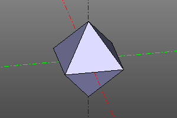
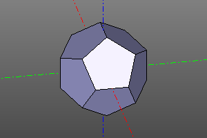
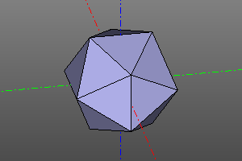

Платоновы тела
Построение платоновых тел. Библиотека основана на https://github.com/qalle2/plato.scad
| Правильный многогранник | Число вершин | Число рёбер | Число граней | Число сторон у грани | Число рёбер примыкающих к вершине | Тип пространственной симметрии |
|---|---|---|---|---|---|---|
| Тетраэдр | 4 | 6 | 4 | 3 | 3 | Td |
| Гексаэдр | 8 | 12 | 6 | 4 | 3 | Oh |
| Октаэдр | 6 | 12 | 8 | 3 | 4 | Oh |
| Додекаэдр | 20 | 30 | 12 | 5 | 3 | Ih |
| Икосаэдр | 12 | 30 | 20 | 3 | 5 | Ih |
Библиотека позволяет указывать размеры тел через радиус описанной окружности r или через длину ребра a.
Сигнатуры:
zencad.platonic.tetrahedron(r=1, a=None, shell=False)
zencad.platonic.hexahedron(r=1, a=None, shell=False)
zencad.platonic.octahedron(r=1, a=None, shell=False)
zencad.platonic.dodecahedron(r=1, a=None, shell=False)
zencad.platonic.icosahedron(r=1, a=None, shell=False)
# Альтернативный синтаксис
zencad.platonic.platonic(nfaces, r=1, a=None, shell=False)
Пример:
# Через радиус:
tetrahedron(10)
hexahedron(10)
octahedron(r=10)
dodecahedron(r=10)
icosahedron(10)
# Через длину ребра:
icosahedron(a=10)
# Альтернативный синтакис:
zencad.platonic.platonic(4, 10)
zencad.platonic.platonic(6, 10)
zencad.platonic.platonic(8, 10)
zencad.platonic.platonic(12, 10)
zencad.platonic.platonic(20, 10)
 
